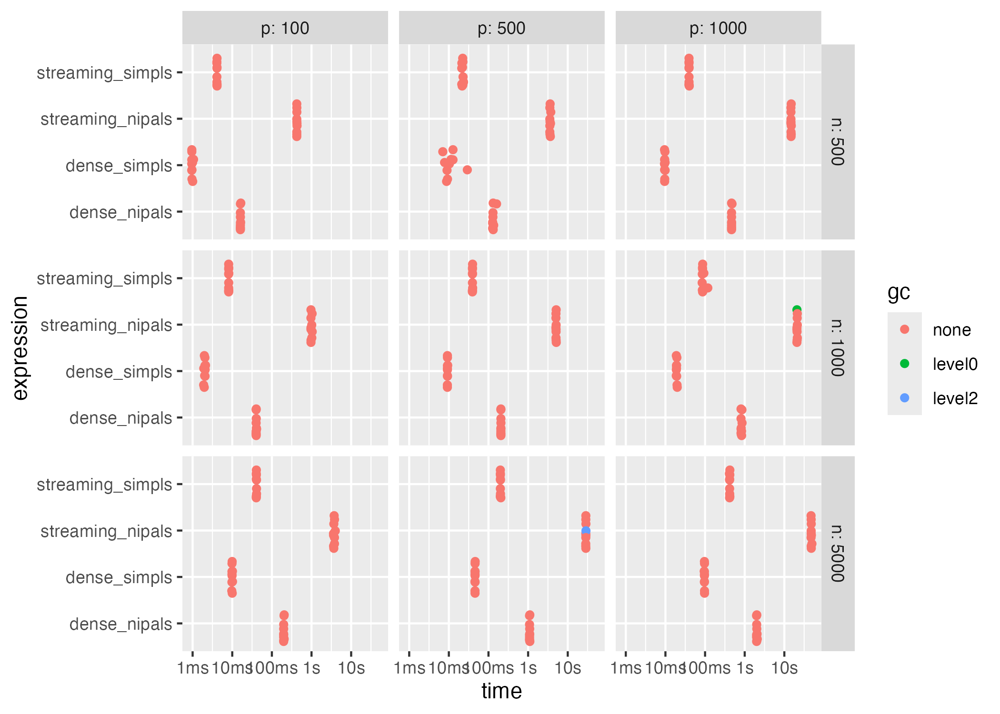
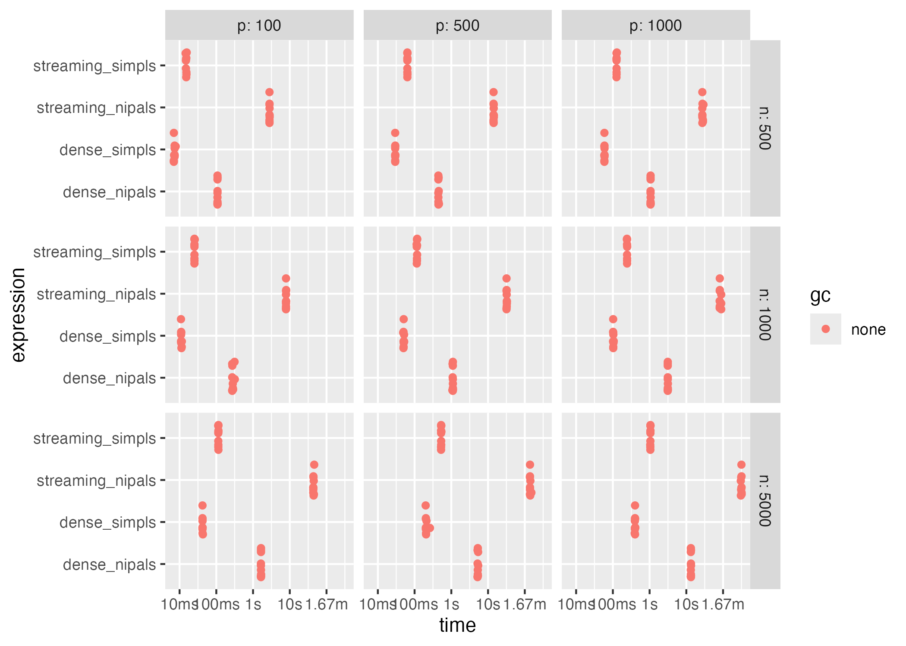
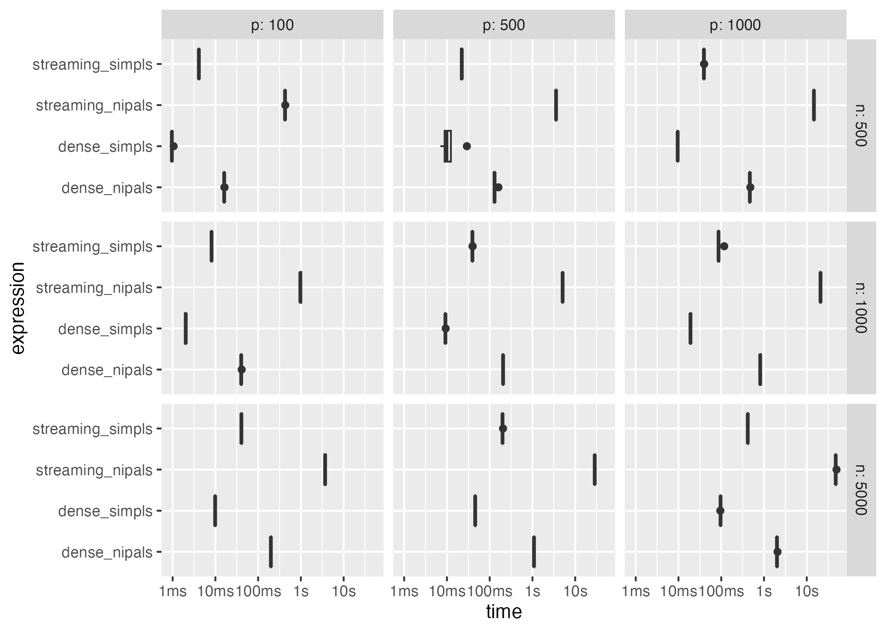
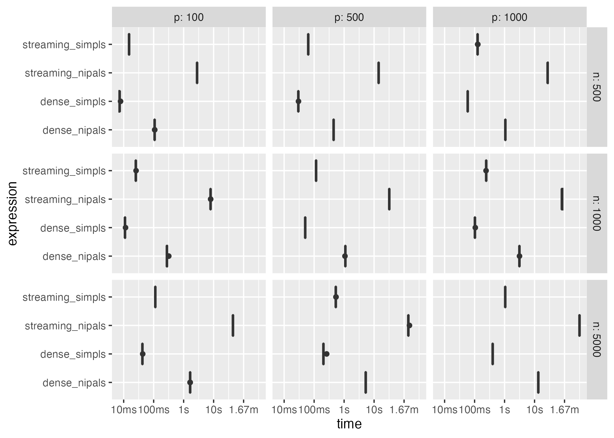

Benchmarking PLS2 Implementations
Frédéric Bertrand
Cedric, Cnam, Parisfrederic.bertrand@lecnam.net
2025-11-07
Source:vignettes/pls2-benchmark.Rmd
pls2-benchmark.RmdOverview
The package offers dense (pls2_dense) and streaming
(pls2_stream) solvers for multi-response partial least
squares regression (PLS2). This vignette demonstrates how to benchmark
both variants on a synthetic dataset featuring three correlated response
variables.
Simulated data
n <- 3500
p <- 40
q <- 3
ncomp <- 4
X <- bigmemory::big.matrix(nrow = n, ncol = p, type = "double")
X[,] <- matrix(rnorm(n * p), nrow = n)
loading_matrix <- matrix(rnorm(p * q), nrow = p)
latent_scores <- matrix(rnorm(n * q), nrow = n)
Y_mat <- scale(latent_scores %*% t(loading_matrix[1:q, , drop = FALSE]) + matrix(rnorm(n * q, sd = 0.5), nrow = n))
Y <- bigmemory::big.matrix(nrow = n, ncol = q, type = "double")
Y[,] <- Y_mat
X[1:6, 1:6]
#> [,1] [,2] [,3] [,4] [,5] [,6]
#> [1,] -1.3435214 -1.26820867 -1.1037112 0.7617503 -0.7401395 0.61024868
#> [2,] 0.6217756 1.11508975 -1.2768613 -1.1255784 -0.6586119 0.10081629
#> [3,] 0.8008747 -0.75753597 0.3151891 -0.2539973 1.0197950 0.19342423
#> [4,] -1.3888924 0.04744551 -0.1255208 0.2758486 1.2427898 0.26696049
#> [5,] -0.7143569 0.42990602 -1.0605240 1.5142303 -0.2104338 0.01490636
#> [6,] -0.3240611 1.76766712 -0.8403403 -0.5756483 1.0435582 -0.53748062
Y[1:6, 1:min(6,q)]
#> [,1] [,2] [,3]
#> [1,] 0.04209719 0.1434869 0.68332640
#> [2,] 0.62385647 1.0324674 -0.23792375
#> [3,] -0.64518653 -0.9586347 1.24808892
#> [4,] -0.73590774 -0.2234672 -0.05677271
#> [5,] -0.38412792 0.3147141 -1.03324920
#> [6,] 1.98359362 0.4768693 -0.64380685Benchmark results
We again rely on the bench package to compare the
implementations. A block size of 1024 rows is used for the streaming
solver, which balances throughput and memory requirements for the
example dataset.
bench_res_q_5 <- press(
n = c(500, 1000, 5000),
p = c(100, 500, 1000),
{
ncomp = 5
rep = 1
q = 5
X <- bigmemory::big.matrix(nrow = n, ncol = p, type = "double")
X[,] <- matrix(rnorm(n * p), nrow = n)
loading_matrix <- matrix(rnorm(p * q), nrow = p)
latent_scores <- matrix(rnorm(n * q), nrow = n)
Y_mat <- scale(latent_scores %*% t(loading_matrix[1:q, , drop = FALSE]) + matrix(rnorm(n * q, sd = 0.5), nrow = n))
Y <- bigmemory::big.matrix(nrow = n, ncol = q, type = "double")
Y[,] <- Y_mat
bench::mark(
dense_simpls = pls2_dense(X, Y, ncomp = ncomp, algorithm = "simpls"),
dense_nipals = pls2_dense(X, Y, ncomp = ncomp, algorithm = "nipals"),
streaming_simpls = pls2_stream(X, Y, ncomp = ncomp, chunk_size = 1024L,
algorithm = "simpls"),
streaming_nipals = pls2_stream(X, Y, ncomp = ncomp, chunk_size = 1024L,
algorithm = "nipals"),
iterations = 10,
check = FALSE
)
}
)
bench_res_q_50 <- press(
n = c(500, 1000, 5000),
p = c(100, 500, 1000),
{
ncomp = 5
rep = 1
q = 50
X <- bigmemory::big.matrix(nrow = n, ncol = p, type = "double")
X[,] <- matrix(rnorm(n * p), nrow = n)
loading_matrix <- matrix(rnorm(p * q), nrow = p)
latent_scores <- matrix(rnorm(n * q), nrow = n)
Y_mat <- scale(latent_scores %*% t(loading_matrix[1:q, , drop = FALSE]) + matrix(rnorm(n * q, sd = 0.5), nrow = n))
Y <- bigmemory::big.matrix(nrow = n, ncol = q, type = "double")
Y[,] <- Y_mat
bench::mark(
dense_simpls = pls2_dense(X, Y, ncomp = ncomp, algorithm = "simpls"),
dense_nipals = pls2_dense(X, Y, ncomp = ncomp, algorithm = "nipals"),
streaming_simpls = pls2_stream(X, Y, ncomp = ncomp, chunk_size = 1024L,
algorithm = "simpls"),
streaming_nipals = pls2_stream(X, Y, ncomp = ncomp, chunk_size = 1024L,
algorithm = "nipals"),
iterations = 10,
check = FALSE
)
}
)Interpreting the output
The benchmark summary reports the average and worst-case execution time as well as memory allocations. Users working with file-backed matrices or very large datasets should prefer the streaming implementation, while the dense solver remains a strong choice when the data comfortably fits in RAM.
bench_res_q_5
#> # A tibble: 36 × 8
#> expression n p min median `itr/sec` mem_alloc `gc/sec`
#> <bch:expr> <dbl> <dbl> <bch:tm> <bch:tm> <dbl> <bch:byt> <dbl>
#> 1 dense_simpls 500 100 950.22µs 958.7µs 1026. 50.5KB 0
#> 2 dense_nipals 500 100 16ms 16.07ms 62.1 36.6KB 0
#> 3 streaming_simpls 500 100 4.08ms 4.11ms 243. 31.9KB 0
#> 4 streaming_nipals 500 100 424.75ms 425.73ms 2.34 44.7KB 0
#> 5 dense_simpls 1000 100 1.9ms 2.03ms 497. 52.9KB 0
#> 6 dense_nipals 1000 100 40.01ms 40.19ms 24.8 52.9KB 0
#> 7 streaming_simpls 1000 100 8.12ms 8.13ms 123. 13.8KB 0
#> 8 streaming_nipals 1000 100 965.84ms 969.9ms 1.01 60.8KB 0
#> 9 dense_simpls 5000 100 9.73ms 9.87ms 101. 209.1KB 0
#> 10 dense_nipals 5000 100 197.99ms 198.43ms 5.00 209.1KB 0
#> # ℹ 26 more rows
bench_res_q_50
#> # A tibble: 36 × 8
#> expression n p min median `itr/sec` mem_alloc `gc/sec`
#> <bch:expr> <dbl> <dbl> <bch:tm> <bch:tm> <dbl> <bch:byt> <dbl>
#> 1 dense_simpls 500 100 6.96ms 7.33ms 138. 71.6KB 0
#> 2 dense_nipals 500 100 107.6ms 107.69ms 9.28 71.6KB 0
#> 3 streaming_simpls 500 100 14.6ms 15.13ms 66.1 52KB 0
#> 4 streaming_nipals 500 100 2.8s 2.81s 0.356 114.6KB 0
#> 5 dense_simpls 1000 100 10.92ms 11.05ms 89.8 91.1KB 0
#> 6 dense_nipals 1000 100 270.61ms 277.01ms 3.52 91.1KB 0
#> 7 streaming_simpls 1000 100 25.37ms 25.38ms 39.3 52KB 0
#> 8 streaming_nipals 1000 100 7.89s 7.9s 0.126 134.2KB 0
#> 9 dense_simpls 5000 100 42.03ms 42.14ms 23.7 247.3KB 0
#> 10 dense_nipals 5000 100 1.64s 1.65s 0.607 247.3KB 0
#> # ℹ 26 more rows
plot(bench_res_q_5, type="jitter")
plot(bench_res_q_50, type="jitter")
plot(bench_res_q_5, type="boxplot")
plot(bench_res_q_50, type="boxplot")